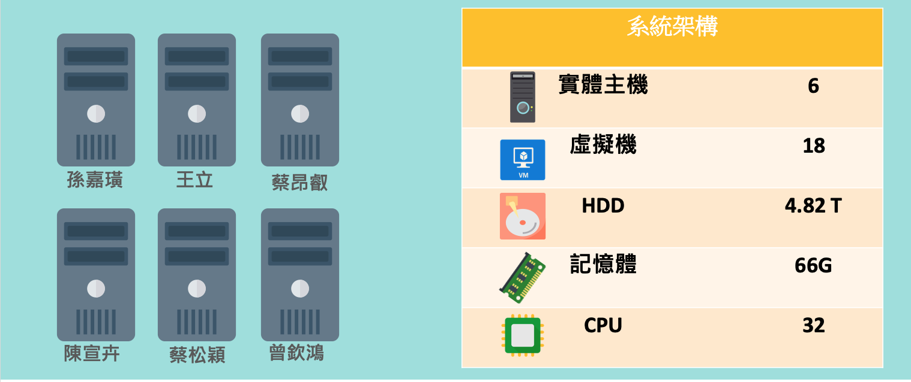
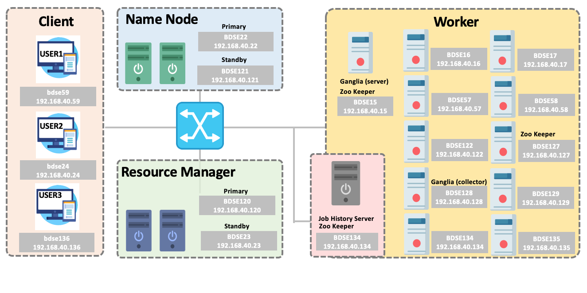
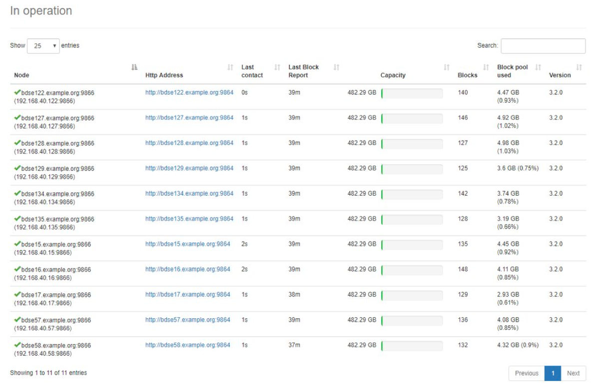

本專題使用6臺實體主機來建置 Hadoop Ecosystem
在每台實體主機中建置3台虛擬主機 (HDD: 500G/ RAM: 4G/ CORES: 2)，共16臺虛擬主機
專題中配合使用分散式架構的HDFS檔案系統、搭配可分散運算的MapReduce演算法，將18臺虛擬機組合成分散式的運算和儲存叢集，加速大資料的儲存和運算
硬體配置如下圖所示：
HDFS 系統架構配置:
- Client端 (User1, User2, User3): 3臺
- Name Node: (Primary + standby) Name Node: 2臺
- Resource Manager: (Primary + standby) Resource Manager: 2臺
- Worker: 11臺
- Job History: 1臺
- Zoo Keeper: 3臺
HDFS 系統啟動檢查:
